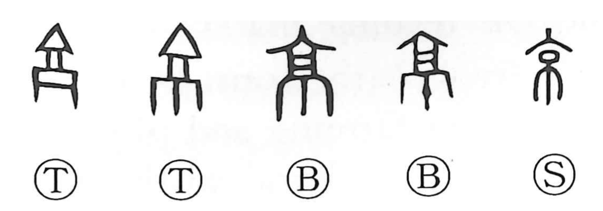

京

Kun: miyako | On: kyo, kei
capital ・ metropolis
Explanation
京 pictures a monumental gate with an arched entrance and a lookout tower above. It stood at the entrance to a military camp or fortified city. The height and strength of the structure made it a visible sign of the place it protected.
Such a gate could also embody ritual defence. Battlefield remains were enclosed in an earthen structure called a keikan, a 京観, making the threshold a display of victory and a barrier against hostile powers. Early rites at these gates included sacrifices.
Because the gate guarded the city, 京 came to name the city itself, especially the capital. Its imposing scale also gave the senses ‘high,’ ‘great,’ and ‘flourishing.’ The familiar meaning ‘capital’ thus grows from the great fortified entrance.